DialReader: results
DialReader reads an analogue dial gauge from one photo with classical image processing, gives the value with an error bar, and says "unreliable" instead of guessing. GenAI is used at three narrow points only, each one tested against the classical pipeline. This page shows what was built and what was measured.
Summary
- The classical pipeline works on the synthetic set. On 182 held-back test photos it answers 98%, with a median error of 0.01% of full scale, and 99% of its answers are within one scale division. It flags 90% as reliable, and none of those is a gross error (above 10% of full scale).
- Abstention does its job. Across the test split, the stress set and every robustness sweep, no reading that the classical pipeline flagged reliable was grossly wrong. The pipeline loses coverage under hard conditions, not correctness.
- Hook 1 (scale parser) works. The VLM read the printed scale and geometry validated it: 19 of 33 parses were accepted and none of the accepted ones was wrong. Every one of the 11 gauge types got a validated scale, and readings with it match readings with the hand-entered scale.
- Hooks 2 and 3 did not help on this data. The sentinel caught every gross error, but Stage 8 had already flagged all of them, so it only added false alarms. The repair loop did not beat a fixed-order rule by a measurable margin. Both are reported as negative results.
- Real photos are much harder. On 21 hand-picked public MeasureBench photos the classical pipeline put 24% inside the valid interval and flagged most of the rest as unreliable. A current VLM alone did better there.
- Scope of the evidence. The 290 photos are rendered, with exact ground truth. They stand in for the hand-collected set the plan calls for, which has not been photographed. Synthetic dials are cleaner than real ones, as the MeasureBench result shows.
The pipeline
Eight classical stages do every measurement. Each stage is one or more lab programs.
| Stage | What it does | Techniques |
|---|---|---|
| 1 Restore | Denoise, deblur, fix contrast, mask glare | Median and Gaussian filters, Wiener filter, cepstrum, CLAHE, unsharp mask |
| 2 Find the dial | Coarse circle, then an ellipse that ignores outlier edges | Canny with adaptive thresholds, Hough circle, RANSAC ellipse |
| 3 Undo the tilt | Map the ellipse back to a circle | Affine transform, circle-preserving homography |
| 4 Unwrap | Dial into a strip: angle by radius | Polar transform with bilinear interpolation |
| 5 Ticks | Tick positions, spacing, scale ends, major and minor | Black-hat, DFT, autocorrelation, comb fit |
| 6 Needle | Needle angle three ways, with a spread | Otsu, opening and closing, skeleton, line fit, Hough line |
| 7 Calibrate | Angle to value | Linear, log or piecewise interpolation between ticks |
| 8 Uncertainty | Error bar and reliable / unreliable flag | Eleven confidence signals, thresholds set on the validation split |
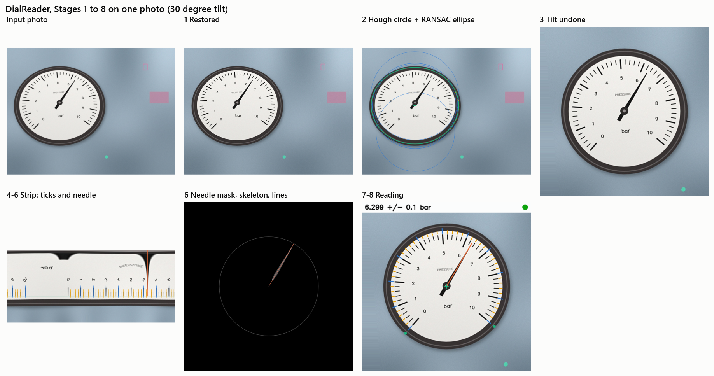
Three GenAI hooks plug in where the classical pipeline is weak or manual. Each must be validated by classical measurements and beat a classical alternative, or be reported as not helping. The pipeline runs with all of them off.
| Hook | Where | What the VLM does | Classical check |
|---|---|---|---|
| 1 Scale parser | Before Stage 7 | Reads unit, range, scale type, direction and the printed labels | Labels must match detected major ticks, be monotonic and evenly spaced |
| 2 Sentinel | After Stage 7 | Gives a coarse reading from the original photo | Only raises a flag when it disagrees with geometry; never replaces the value |
| 3 Repair loop | After Stage 8, unreliable photos only | Looks at three overlays and picks one action from a fixed menu | The pipeline reruns and Stage 8 judges the result; the VLM never outputs a number |
Data and ground truth
290 synthetic photos follow the plan's collection protocol: a base set of 10 readings for each of 11 gauge types in good conditions, and a variation set of 3 gauges x 10 readings x 3 tilts (0, 20, 40 degrees) x 2 lightings (room, window glare), from two virtual phones. A dial is drawn flat, then photographed with perspective tilt, in-plane roll, uneven light, glare, lens blur, sensor noise and JPEG compression. The true reading is known exactly.
- Validation split (108 photos): used only to set the Stage 8 thresholds and the sentinel threshold.
- Test split (182 photos): includes two gauge types, barometer and speedometer, held out entirely.
- Stress set (182 photos): the test split with one severe degradation each, to supply hard cases.
- MeasureBench subset (21 photos): public real-world photos, filtered by hand to single-needle circular dials.
| gauge | photos | width | height | mean_grey | std_grey | entropy_bits | bright_fraction |
|---|---|---|---|---|---|---|---|
| barometer | 10 | 960 | 720 | 151.53 | 44.4 | 6.42 | 0.105 |
| hygrometer | 10 | 960 | 720 | 159.38 | 39.23 | 6.33 | 0.085 |
| kitchen_scale | 10 | 960 | 720 | 183.44 | 32.62 | 6.35 | 0.192 |
| megohmmeter | 10 | 960 | 720 | 173.02 | 45.47 | 6.34 | 0.145 |
| oven_thermometer | 10 | 960 | 720 | 119.67 | 47.41 | 6.11 | 0 |
| pressure_gauge | 70 | 960 | 720 | 155.01 | 48.19 | 6.69 | 0.14 |
| speedometer | 10 | 960 | 720 | 120.83 | 55.12 | 6.27 | 0.036 |
| thermometer | 70 | 960 | 720 | 166.01 | 40.39 | 6.59 | 0.155 |
| tyre_gauge | 70 | 960 | 720 | 158.83 | 50.31 | 6.67 | 0.157 |
| vacuum_gauge | 10 | 960 | 720 | 160.91 | 48.91 | 6.53 | 0.182 |
| voltmeter | 10 | 960 | 720 | 157.55 | 55.72 | 6.46 | 0.221 |
E1: does each classical stage matter?
One stage is switched off at a time. The second block adds blur and noise, where restoration has work to do.
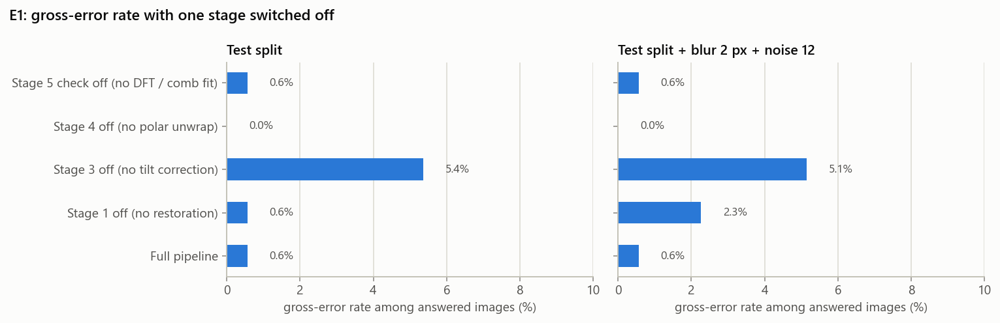
| data | configuration | n | answered % | mean error (% FS) | 95% CI | median | 90th pct | gross error % (>10% FS) | within 1 division % | coverage % (reliable) | gross error % among reliable |
|---|---|---|---|---|---|---|---|---|---|---|---|
| Test split | Full pipeline | 182 | 97.8 | 0.34 | [0.04, 0.87] | 0.01 | 0.04 | 0.56 | 98.88 | 89.56 | 0 |
| Test split | Stage 8 off (no abstention) | 182 | 97.8 | 0.34 | [0.04, 0.87] | 0.01 | 0.04 | 0.56 | 98.88 | 97.8 | 0.56 |
| Test split | Stage 1 off (no restoration) | 182 | 98.35 | 0.26 | [0.02, 0.73] | 0.01 | 0.04 | 0.56 | 99.44 | 91.76 | 0 |
| Test split | Stage 3 off (no tilt correction) | 182 | 92.31 | 2.83 | [1.21, 4.86] | 0.02 | 3.42 | 5.36 | 88.69 | 56.04 | 0 |
| Test split | Stage 4 off (no polar unwrap) | 182 | 86.26 | 1.43 | [1.27, 1.60] | 1.27 | 2.5 | 0 | 89.17 | 86.26 | 0 |
| Test split | Stage 5 check off (no DFT / comb fit) | 182 | 97.8 | 0.47 | [0.16, 1.03] | 0.1 | 0.32 | 0.56 | 97.75 | 57.14 | 0 |
| Test split + blur 2 px + noise 12 | Full pipeline | 182 | 97.25 | 0.34 | [0.03, 0.93] | 0.02 | 0.06 | 0.56 | 98.87 | 87.91 | 0 |
| Test split + blur 2 px + noise 12 | Stage 8 off (no abstention) | 182 | 97.25 | 0.34 | [0.03, 0.93] | 0.02 | 0.06 | 0.56 | 98.87 | 97.25 | 0.56 |
| Test split + blur 2 px + noise 12 | Stage 1 off (no restoration) | 182 | 97.25 | 1.23 | [0.16, 2.62] | 0.02 | 0.07 | 2.26 | 96.61 | 87.91 | 0 |
| Test split + blur 2 px + noise 12 | Stage 3 off (no tilt correction) | 182 | 96.15 | 3.41 | [1.49, 5.68] | 0.03 | 3.43 | 5.14 | 89.14 | 56.04 | 0 |
| Test split + blur 2 px + noise 12 | Stage 4 off (no polar unwrap) | 182 | 87.36 | 1.51 | [1.35, 1.68] | 1.4 | 2.79 | 0 | 89.94 | 87.36 | 0 |
| Test split + blur 2 px + noise 12 | Stage 5 check off (no DFT / comb fit) | 182 | 97.25 | 0.44 | [0.13, 1.03] | 0.09 | 0.3 | 0.56 | 98.87 | 64.29 | 0 |
- Tilt correction matters most. Without it the gross-error rate goes from 0.6% to 5.4% and coverage falls to 56%.
- Polar unwrap buys precision. Without it the needle comes from a Hough line and the scale ends from a nominal start angle rather than from the ticks in the photo. The median error rises from 0.01% to 1.27% of full scale, and it answers 86% of photos against 98%. It avoids gross errors only because it leans on hand-entered geometry.
- The comb fit buys coverage. Without the DFT and comb check, coverage drops from 90% to 57%, because missed or false ticks go uncorrected and the tick count stops matching.
- Restoration matters once the photo is degraded. With blur and noise added, switching Stage 1 off raises the gross-error rate from 0.6% to 2.3%. On clean photos it makes no difference.
- Abstention removes the gross errors. Among readings flagged reliable the gross-error rate is 0.0% in every row; the last row shows the rate if nothing is withheld.
E2: robustness, one factor at a time
Tilt and glare come from the variation set. The other factors are synthetic degradations of clean test photos. The VLM-alone baseline uses one photo per gauge type and three degraded levels per factor.
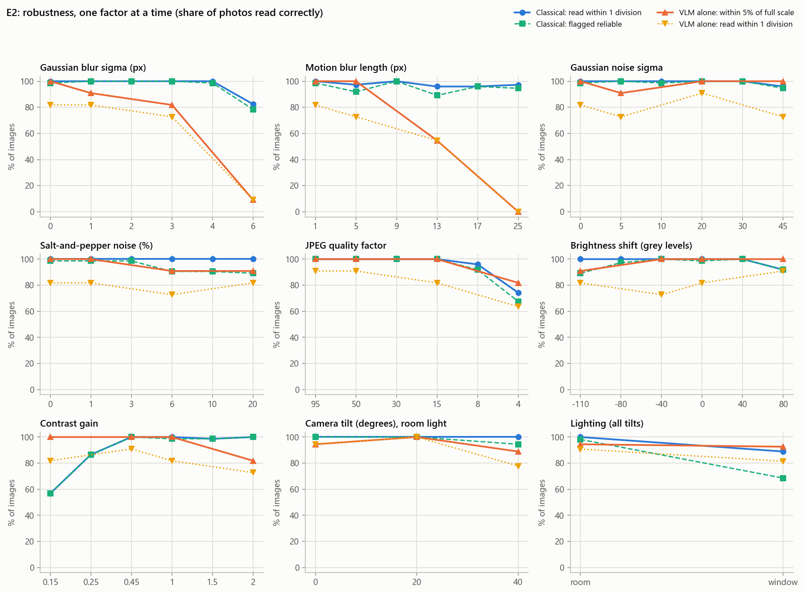
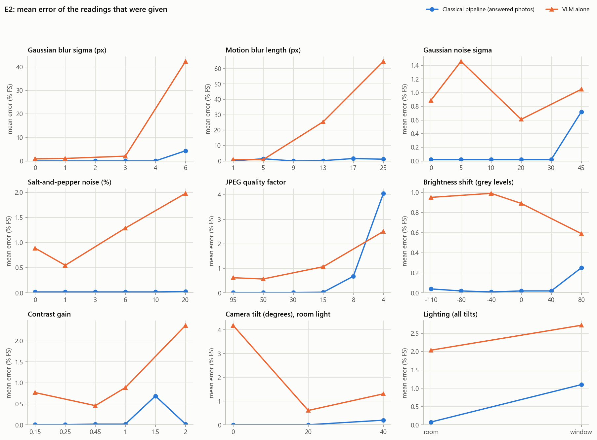
Full table: classical pipeline, every level (47 rows)
| factor | level | n | answered % | correct % (within 1 division) | coverage % (reliable) | mean error (% FS) | gross error % (>10% FS) | gross error % among reliable |
|---|---|---|---|---|---|---|---|---|
| gaussian_blur | 0 | 74 | 100 | 100 | 98.65 | 0.02 | 0 | 0 |
| gaussian_blur | 1 | 74 | 100 | 100 | 100 | 0.02 | 0 | 0 |
| gaussian_blur | 2 | 74 | 100 | 100 | 100 | 0.02 | 0 | 0 |
| gaussian_blur | 3 | 74 | 100 | 100 | 100 | 0.02 | 0 | 0 |
| gaussian_blur | 4 | 74 | 100 | 100 | 98.65 | 0.02 | 0 | 0 |
| gaussian_blur | 6 | 74 | 89.19 | 82.43 | 78.38 | 4.33 | 6.06 | 0 |
| motion_blur | 1 | 74 | 100 | 100 | 98.65 | 0.02 | 0 | 0 |
| motion_blur | 5 | 74 | 100 | 97.3 | 91.89 | 1.42 | 1.35 | 0 |
| motion_blur | 9 | 74 | 100 | 100 | 100 | 0.02 | 0 | 0 |
| motion_blur | 13 | 74 | 98.65 | 95.95 | 89.19 | 0.21 | 0 | 0 |
| motion_blur | 17 | 74 | 100 | 95.95 | 95.95 | 1.58 | 1.35 | 0 |
| motion_blur | 25 | 74 | 100 | 97.3 | 94.59 | 1.12 | 2.7 | 0 |
| gaussian_noise | 0 | 74 | 100 | 100 | 98.65 | 0.02 | 0 | 0 |
| gaussian_noise | 5 | 74 | 100 | 100 | 100 | 0.02 | 0 | 0 |
| gaussian_noise | 10 | 74 | 100 | 100 | 98.65 | 0.02 | 0 | 0 |
| gaussian_noise | 20 | 74 | 100 | 100 | 100 | 0.02 | 0 | 0 |
| gaussian_noise | 30 | 74 | 100 | 100 | 100 | 0.02 | 0 | 0 |
| gaussian_noise | 45 | 74 | 98.65 | 95.95 | 94.59 | 0.72 | 2.74 | 0 |
| salt_pepper | 0 | 74 | 100 | 100 | 98.65 | 0.02 | 0 | 0 |
| salt_pepper | 1 | 74 | 100 | 100 | 98.65 | 0.02 | 0 | 0 |
| salt_pepper | 3 | 74 | 100 | 100 | 98.65 | 0.02 | 0 | 0 |
| salt_pepper | 6 | 74 | 100 | 100 | 90.54 | 0.02 | 0 | 0 |
| salt_pepper | 10 | 74 | 100 | 100 | 90.54 | 0.02 | 0 | 0 |
| salt_pepper | 20 | 74 | 100 | 100 | 89.19 | 0.03 | 0 | 0 |
| jpeg_quality | 95 | 74 | 100 | 100 | 100 | 0.02 | 0 | 0 |
| jpeg_quality | 50 | 74 | 100 | 100 | 100 | 0.02 | 0 | 0 |
| jpeg_quality | 30 | 74 | 100 | 100 | 100 | 0.02 | 0 | 0 |
| jpeg_quality | 15 | 74 | 100 | 100 | 100 | 0.03 | 0 | 0 |
| jpeg_quality | 8 | 74 | 97.3 | 95.95 | 91.89 | 0.68 | 1.39 | 0 |
| jpeg_quality | 4 | 74 | 82.43 | 74.32 | 67.57 | 4.06 | 4.92 | 0 |
| brightness | -110 | 74 | 100 | 100 | 89.19 | 0.04 | 0 | 0 |
| brightness | -80 | 74 | 100 | 100 | 97.3 | 0.02 | 0 | 0 |
| brightness | -40 | 74 | 100 | 100 | 100 | 0.01 | 0 | 0 |
| brightness | 0 | 74 | 100 | 100 | 98.65 | 0.02 | 0 | 0 |
| brightness | 40 | 74 | 100 | 100 | 100 | 0.02 | 0 | 0 |
| brightness | 80 | 74 | 93.24 | 91.89 | 91.89 | 0.25 | 1.45 | 0 |
| contrast | 0.15 | 74 | 56.76 | 56.76 | 56.76 | 0.01 | 0 | 0 |
| contrast | 0.25 | 74 | 86.49 | 86.49 | 86.49 | 0.01 | 0 | 0 |
| contrast | 0.45 | 74 | 100 | 100 | 100 | 0.02 | 0 | 0 |
| contrast | 1.0 | 74 | 100 | 100 | 98.65 | 0.02 | 0 | 0 |
| contrast | 1.5 | 74 | 100 | 98.65 | 98.65 | 0.69 | 1.35 | 0 |
| contrast | 2.0 | 74 | 100 | 100 | 100 | 0.02 | 0 | 0 |
| tilt | 0.0 | 18 | 100 | 100 | 100 | 0.01 | 0 | 0 |
| tilt | 20.0 | 18 | 100 | 100 | 100 | 0.01 | 0 | 0 |
| tilt | 40.0 | 18 | 100 | 100 | 94.44 | 0.2 | 0 | 0 |
| glare | room | 54 | 100 | 100 | 98.15 | 0.08 | 0 | 0 |
| glare | window | 54 | 92.59 | 88.89 | 68.52 | 1.1 | 2 | 0 |
Full table: VLM alone (33 rows)
| factor | level | n | correct % (within 1 division) | within 5% FS % | mean error (% FS) | gross error % (>10% FS) |
|---|---|---|---|---|---|---|
| gaussian_blur | 0 | 11 | 81.82 | 100 | 0.89 | 0 |
| gaussian_blur | 1 | 11 | 81.82 | 90.91 | 1.08 | 0 |
| gaussian_blur | 3 | 11 | 72.73 | 81.82 | 2.05 | 9.09 |
| gaussian_blur | 6 | 11 | 9.09 | 9.09 | 42.37 | 90 |
| motion_blur | 1 | 11 | 81.82 | 100 | 0.89 | 0 |
| motion_blur | 5 | 11 | 72.73 | 100 | 0.87 | 0 |
| motion_blur | 13 | 11 | 54.55 | 54.55 | 25.51 | 36.36 |
| motion_blur | 25 | 11 | 0 | 0 | 64.68 | 90.91 |
| gaussian_noise | 0 | 11 | 81.82 | 100 | 0.89 | 0 |
| gaussian_noise | 5 | 11 | 72.73 | 90.91 | 1.46 | 0 |
| gaussian_noise | 20 | 11 | 90.91 | 100 | 0.61 | 0 |
| gaussian_noise | 45 | 11 | 72.73 | 100 | 1.05 | 0 |
| salt_pepper | 0 | 11 | 81.82 | 100 | 0.89 | 0 |
| salt_pepper | 1 | 11 | 81.82 | 100 | 0.55 | 0 |
| salt_pepper | 6 | 11 | 72.73 | 90.91 | 1.29 | 0 |
| salt_pepper | 20 | 11 | 81.82 | 90.91 | 1.98 | 9.09 |
| jpeg_quality | 95 | 11 | 90.91 | 100 | 0.62 | 0 |
| jpeg_quality | 50 | 11 | 90.91 | 100 | 0.57 | 0 |
| jpeg_quality | 15 | 11 | 81.82 | 100 | 1.07 | 0 |
| jpeg_quality | 4 | 11 | 63.64 | 81.82 | 2.51 | 9.09 |
| brightness | 0 | 11 | 81.82 | 100 | 0.89 | 0 |
| brightness | -110 | 11 | 81.82 | 90.91 | 0.95 | 0 |
| brightness | -40 | 11 | 72.73 | 100 | 0.99 | 0 |
| brightness | 80 | 11 | 90.91 | 100 | 0.59 | 0 |
| contrast | 1.0 | 11 | 81.82 | 100 | 0.89 | 0 |
| contrast | 0.15 | 11 | 81.82 | 100 | 0.77 | 0 |
| contrast | 0.45 | 11 | 90.91 | 100 | 0.46 | 0 |
| contrast | 2.0 | 11 | 72.73 | 81.82 | 2.37 | 9.09 |
| tilt | 0.0 | 18 | 94.44 | 94.44 | 4.19 | 5.56 |
| tilt | 20.0 | 18 | 100 | 100 | 0.61 | 0 |
| tilt | 40.0 | 18 | 77.78 | 88.89 | 1.31 | 0 |
| glare | room | 54 | 90.74 | 94.44 | 2.04 | 1.85 |
| glare | window | 54 | 81.48 | 92.59 | 2.72 | 1.85 |
E3 and E4: do the GenAI hooks help?
Model: anthropic/claude-haiku-5.5. A hook counts as helpful only if a paired
bootstrap against the step below it shows more useful readings (flagged reliable and within 2% of full scale) or fewer
silent failures (flagged reliable but more than 10% out), with a 95% interval that excludes zero.
E3: the ablation ladder
| data | id | what is switched on | mean error (% FS) | 90th percentile | gross-error rate % (reliable) | coverage % (reliable) | coverage % at risk <= 2% | useful readings % (reliable and correct) | silent failures % (reliable but gross) | VLM calls per image | verdict vs the step below |
|---|---|---|---|---|---|---|---|---|---|---|---|
| Test split | C0 | Classical pipeline, scale entered by hand | 0.02 | 0.04 | 0 | 89.56 | 97.8 | 89.56 | 0 | 0 | |
| Test split | C1 | C0 + hook 1 (scale parser) | 0.02 | 0.04 | 0 | 89.56 | 97.8 | 89.56 | 0 | 0.11 | no loss against hand entry |
| Test split | C2 | C1 + hook 2 (sentinel flags) | 0.02 | 0.04 | 0 | 86.26 | 97.8 | 86.26 | 0 | 1.11 | hurts |
| Test split | C3 | C2 + hook 3 (repair loop) | 0.02 | 0.04 | 0 | 87.91 | 98.9 | 87.91 | 0 | 1.37 | no measurable effect |
| Test split | B | VLM alone, as the baseline | 1.84 | 2.81 | 1.65 | 100 | 100 | 85.71 | 1.65 | 1 | |
| Stress set | C0 | Classical pipeline, scale entered by hand | 0.03 | 0.07 | 0 | 75.82 | 83.52 | 75.82 | 0 | 0 | |
| Stress set | C1 | C0 + hook 1 (scale parser) | 0.03 | 0.07 | 0 | 75.82 | 83.52 | 75.82 | 0 | 0.11 | no loss against hand entry |
| Stress set | C2 | C1 + hook 2 (sentinel flags) | 0.03 | 0.06 | 0 | 53.85 | 71.43 | 53.85 | 0 | 1.11 | hurts |
| Stress set | C3 | C2 + hook 3 (repair loop) | 0.76 | 0.07 | 0.97 | 56.59 | 58.79 | 56.04 | 0.55 | 2.03 | mixed: more useful readings, new silent failures |
| Stress set | B | VLM alone, as the baseline | 14.61 | 58.49 | 26.92 | 100 | 45.6 | 61.54 | 26.92 | 1 |
Change against the step below, in % of all photos, with its 95% interval:
- Test split, C1: no loss against hand entry useful +0.0 [+0.0, +0.0], silent failures +0.0 [+0.0, +0.0]
- Test split, C2: hurts useful -3.3 [-6.0, -1.1], silent failures +0.0 [+0.0, +0.0]
- Test split, C3: no measurable effect useful +1.6 [+0.0, +3.8], silent failures +0.0 [+0.0, +0.0]
- Stress set, C1: no loss against hand entry useful +0.0 [+0.0, +0.0], silent failures +0.0 [+0.0, +0.0]
- Stress set, C2: hurts useful -22.0 [-28.0, -15.4], silent failures +0.0 [+0.0, +0.0]
- Stress set, C3: mixed: more useful readings, new silent failures useful +2.2 [+0.5, +4.4], silent failures +0.5 [+0.0, +1.6]
Hook 1: scale parser
| gauge type | parses tried | accepted by validation | accepted and correct | VLM answer correct without validation | label-to-tick match rate % | rejection reasons |
|---|---|---|---|---|---|---|
| pressure_gauge | 3 | 1 | 1 | 3 | 57.6 | too few labels line up with detected major ticks |
| tyre_gauge | 3 | 2 | 2 | 3 | 81 | too few labels line up with detected major ticks |
| kitchen_scale | 3 | 2 | 2 | 3 | 77.8 | too few labels line up with detected major ticks |
| thermometer | 3 | 2 | 2 | 3 | 83.3 | too few labels line up with detected major ticks |
| hygrometer | 3 | 2 | 2 | 3 | 93.9 | labelled values are not evenly spaced along the ticks |
| barometer | 3 | 1 | 1 | 3 | 60.6 | too few labels line up with detected major ticks |
| oven_thermometer | 3 | 1 | 1 | 1 | 61.1 | too few labels line up with detected major ticks |
| vacuum_gauge | 3 | 2 | 2 | 2 | 66.7 | scale type 'nonlinear' is out of scope |
| voltmeter | 3 | 2 | 2 | 3 | 81 | labelled values are not evenly spaced along the ticks |
| speedometer | 3 | 3 | 3 | 3 | 100 | |
| megohmmeter | 3 | 1 | 1 | 3 | 66.7 | label values are not monotonic along the scale; too few labels line up with detected major ticks |
Hook 2 and E4: does the sentinel add anything beyond Stage 8?
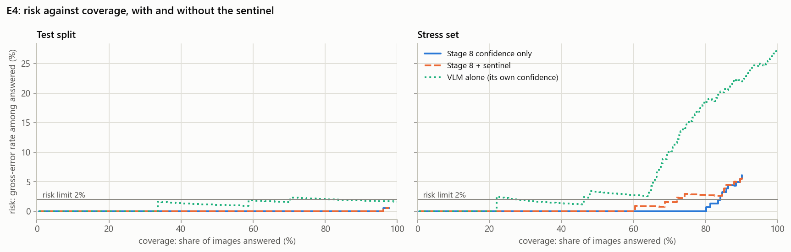
| data | images with both readings | classical gross errors | gross errors flagged by sentinel | recall % | gross errors Stage 8 had missed | of those, caught by sentinel | false alarms on correct readings % | VLM alone mean error (% FS) |
|---|---|---|---|---|---|---|---|---|
| Test split | 178 | 1 | 1 | 100 | 0 | 0 | 3.47 | 1.84 |
| Stress set | 164 | 10 | 10 | 100 | 0 | 0 | 29.33 | 14.61 |
Hook 3: repair loop
| data | method | flagged images | fixed (reliable and correct) | fixed % | made reliable but wrong | pipeline reruns per image | VLM calls per image |
|---|---|---|---|---|---|---|---|
| Test split | No repair | 25 | 0 | 0 | 0 | 0 | 0 |
| Test split | Hook 3: VLM picks the action (at most 2 reruns) | 25 | 3 | 12 | 0 | 1.88 | 1.88 |
| Test split | Rule-based, fixed order (at most 2 reruns) | 25 | 3 | 12 | 0 | 1.96 | 0 |
| Test split | Grid search over all actions (5 reruns) | 25 | 3 | 12 | 1 | 5 | 0 |
| Stress set | No repair | 84 | 0 | 0 | 0 | 0 | 0 |
| Stress set | Hook 3: VLM picks the action (at most 2 reruns) | 84 | 4 | 4.76 | 1 | 1.98 | 1.98 |
| Stress set | Rule-based, fixed order (at most 2 reruns) | 84 | 3 | 3.57 | 0 | 2 | 0 |
| Stress set | Grid search over all actions (5 reruns) | 84 | 4 | 4.76 | 3 | 5 | 0 |
Cost and logging
All VLM calls for this project, the hook experiments, the VLM-alone baselines
and the MeasureBench run, cost $0.42 in total (1013 calls). Hook 1
runs once per gauge type, hook 2 once per photo and hook 3 only on flagged photos. Every call is cached on disk and
logged with its prompt, output, token counts, cost and validation result in logs/vlm_calls.jsonl.
E5: does it generalise to unseen gauge types?
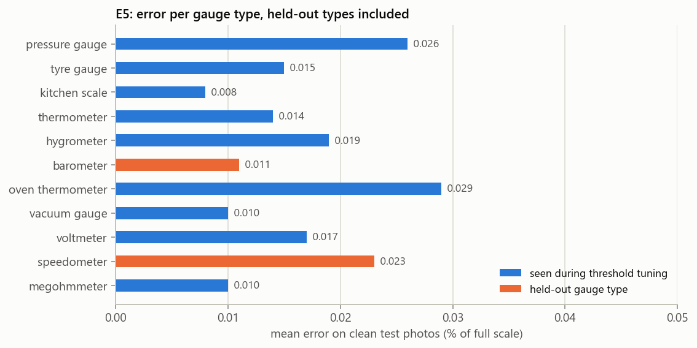
| gauge type | held out | n | answered % | mean error (% FS) | 95% CI | 90th pct | gross error % (>10% FS) | within 1 division % | coverage % (reliable) |
|---|---|---|---|---|---|---|---|---|---|
| pressure_gauge | no | 6 | 100 | 0.026 | [0.006, 0.061] | 0.064 | 0 | 100 | 83.33 |
| tyre_gauge | no | 6 | 100 | 0.015 | [0.006, 0.026] | 0.031 | 0 | 100 | 100 |
| kitchen_scale | no | 6 | 100 | 0.008 | [0.003, 0.014] | 0.016 | 0 | 100 | 100 |
| thermometer | no | 6 | 100 | 0.014 | [0.005, 0.023] | 0.028 | 0 | 100 | 100 |
| hygrometer | no | 6 | 100 | 0.019 | [0.010, 0.030] | 0.036 | 0 | 100 | 100 |
| barometer | yes | 10 | 100 | 0.011 | [0.008, 0.014] | 0.015 | 0 | 100 | 100 |
| oven_thermometer | no | 6 | 100 | 0.029 | [0.019, 0.039] | 0.043 | 0 | 100 | 100 |
| vacuum_gauge | no | 6 | 100 | 0.01 | [0.004, 0.020] | 0.021 | 0 | 100 | 100 |
| voltmeter | no | 6 | 100 | 0.017 | [0.010, 0.025] | 0.029 | 0 | 100 | 100 |
| speedometer | yes | 10 | 100 | 0.023 | [0.013, 0.035] | 0.052 | 0 | 100 | 100 |
| megohmmeter | no | 6 | 100 | 0.01 | [0.006, 0.016] | 0.017 | 0 | 100 | 100 |
| ALL SEEN TYPES | no | 54 | 100 | 0.016 | [0.012, 0.022] | 0.038 | 0 | 100 | 98.15 |
| ALL HELD-OUT TYPES | yes | 20 | 100 | 0.017 | [0.011, 0.024] | 0.034 | 0 | 100 | 100 |
E6: public real-world photos (MeasureBench)
MeasureBench has 711 real dial images, including clocks and multi-needle instruments. 21 single-needle circular dials with one scale were picked by hand, and their scale ranges entered by hand from the image. MeasureBench counts a reading as correct when it falls inside a valid interval.
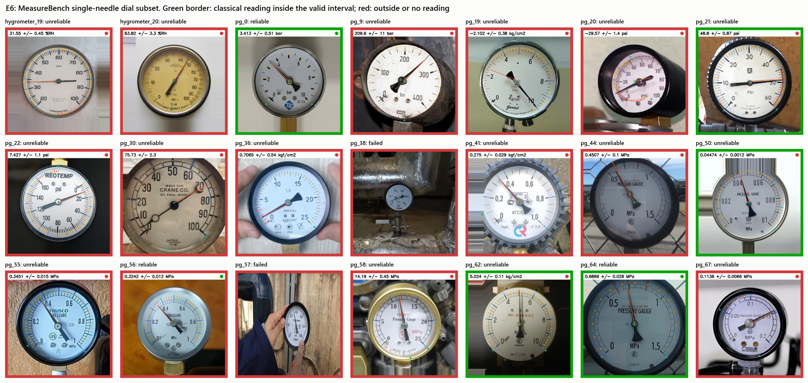
| method | images | answered % | interval accuracy % (all images) | flagged reliable % | interval accuracy % among reliable | median distance to interval (% FS), answered |
|---|---|---|---|---|---|---|
| DialReader classical (C0), scale entered by hand | 21 | 90.5 | 23.8 | 14.3 | 66.7 | 2.9 |
| VLM alone (anthropic/claude-haiku-5.5) | 21 | 100 | 61.9 | 0 | ||
| DialReader with hook 1 (scale parsed by the VLM, validated) | 21 | 23.8 | 19 | |||
| Published: best of 18 VLMs, overall accuracy on real images | 30.2 | |||||
| Published: value accuracy on real images (best model) | 30.7 | |||||
| Published: Reitsma et al. 2024 pipeline, overall accuracy | 8.5 | |||||
| Published: Shu et al. 2023 pipeline, value accuracy on real images | 4.2 |
Per-image results (21 rows)
| image | valid interval | scale entered by hand | classical reading | error bar | status | classical in interval | VLM alone | VLM in interval | hook 1 parse | why |
|---|---|---|---|---|---|---|---|---|---|---|
| hygrometer_19 | 33 to 34 | 20 to 100 %RH | 31.55 | 0.452 | unreliable | no | 34 | yes | rejected: scale type 'nonlinear' is out of scope | many tick marks are missing |
| hygrometer_20 | 46 to 47 | 0 to 100 %RH | 63.82 | 3.32 | unreliable | no | 47 | yes | rejected: too few labels line up with detected major ticks | tick spacing from the DFT disagrees with the comb; many tick marks are missing; tick marks |
| pressure_gauge_0 | 3 to 3.5 | 0 to 10 bar | 3.41 | 0.513 | reliable | yes | 3.2 | yes | accepted | |
| pressure_gauge_9 | 258 to 262 | 0 to 400 bar | 209.63 | 11.05 | unreliable | no | 230 | no | rejected: no major ticks detected | many tick marks are missing; tick marks are faint; needle angle is uncertain |
| pressure_gauge_19 | 9.8 to 10.0 | 0 to 10 kg/cm2 | -2.1 | 0.379 | unreliable | no | 9.8 | yes | rejected: too few labels line up with detected major ticks | line fit and Hough line disagree on the needle; needle is outside the scale; needle angle |
| pressure_gauge_20 | 10 to 12 | 0 to 100 psi | -29.57 | 1.38 | unreliable | no | 10 | yes | rejected: too few labels line up with detected major ticks | needle is outside the scale; many tick marks are missing; tick marks are not evenly spaced |
| pressure_gauge_21 | 47 to 49 | 0 to 60 psi | 48.8 | 0.87 | unreliable | yes | 9.5 | no | rejected: labelled values are not evenly spaced along the ticks | line fit and Hough line disagree on the needle; needle angle is uncertain |
| pressure_gauge_22 | 12 to 14 | 0 to 160 psi | 7.43 | 1.11 | unreliable | no | 12 | yes | accepted | tick marks are not evenly spaced; many tick marks are missing |
| pressure_gauge_30 | 2 to 5 | 0 to 100 | 75.73 | 2.33 | unreliable | no | 70.5 | no | rejected: too few labels line up with detected major ticks | many tick marks are missing |
| pressure_gauge_36 | 1.5 to 2 | 0 to 25 kgf/cm2 | 0.707 | 0.54 | unreliable | no | 1 | no | rejected: label values are not monotonic along the scale | tick marks are faint |
| pressure_gauge_38 | 0.06 to 0.08 | 0 to 1 MPa | failed | no | 0.1 | no | rejected: no ticks | dial face not found | ||
| pressure_gauge_41 | 0.3 to 0.35 | 0 to 1 kgf/cm2 | 0.275 | 0.0291 | unreliable | no | 0.35 | yes | accepted | tick marks are faint |
| pressure_gauge_44 | 0.55 to 0.6 | 0 to 1.5 MPa | 0.451 | 0.0997 | unreliable | no | 0.55 | yes | rejected: no major ticks detected | line fit and Hough line disagree on the needle; tick spacing from the DFT disagrees with t |
| pressure_gauge_50 | 0.044 to 0.046 | 0 to 0.1 MPa | 0.0447 | 0.0012 | unreliable | yes | 0.043 | no | rejected: labelled values are not evenly spaced along the ticks | tick marks are not evenly spaced; tick spacing from the DFT disagrees with the comb |
| pressure_gauge_55 | 0.36 to 0.38 | 0 to 1 MPa | 0.345 | 0.0152 | unreliable | no | 0.95 | no | rejected: labelled values are not evenly spaced along the ticks | line fit and Hough line disagree on the needle; needle angle is uncertain |
| pressure_gauge_56 | 0.34 to 0.36 | 0 to 1 MPa | 0.324 | 0.0116 | reliable | no | 0.34 | yes | rejected: too few labels line up with detected major ticks | |
| pressure_gauge_57 | 0.25 to 0.26 | 0 to 0.6 MPa | failed | no | 0.26 | yes | rejected: no ticks | dial face not found | ||
| pressure_gauge_58 | 11 to 12 | 0 to 25 MPa | 14.19 | 0.45 | unreliable | no | 11.6 | yes | accepted | tick marks are not evenly spaced; many tick marks are missing; tick spacing from the DFT d |
| pressure_gauge_62 | 5 to 5.2 | 0 to 10 kg/cm2 | 5.02 | 0.113 | unreliable | yes | 5 | yes | rejected: labelled values are not evenly spaced along the ticks | tick marks are not evenly spaced |
| pressure_gauge_64 | 0.65 to 0.7 | 0 to 1.5 MPa | 0.687 | 0.0261 | reliable | yes | 1.05 | no | accepted | |
| pressure_gauge_67 | 0.14 to 0.15 | 0 to 0.2 MPa | 0.114 | 0.0066 | unreliable | no | 0.145 | yes | rejected: too few labels line up with detected major ticks | tick marks are faint; tick marks are not evenly spaced; tick spacing from the DFT disagree |
Optional stages 9 to 11
Stage 9: recognise the gauge type and find the gauge
| classifier | train photos | test photos | accuracy % (test photos) | stress photos | accuracy % (stress photos) |
|---|---|---|---|---|---|
| HOG + linear SVM | 145 | 145 | 92.4 | 91 | 82.4 |
| LBP + SVM | 145 | 145 | 97.2 | 91 | 68.1 |
| Bag of Words (SIFT) + SVM | 145 | 145 | 97.9 | 91 | 68.1 |
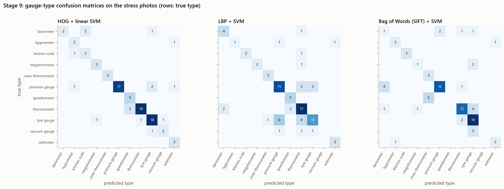
| data | photos | average precision | best box is the gauge % (IoU >= 0.5) | training positives | training negatives |
|---|---|---|---|---|---|
| Test photos | 145 | 0.99 | 100 | 290 | 886 |
| Stress photos | 91 | 0.97 | 100 | 290 | 886 |

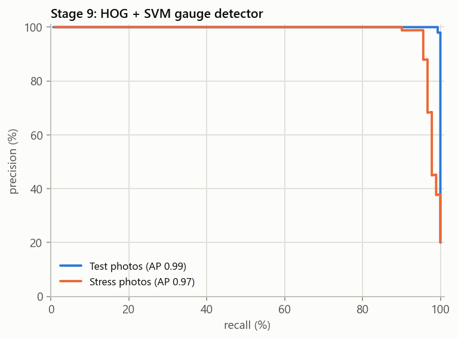

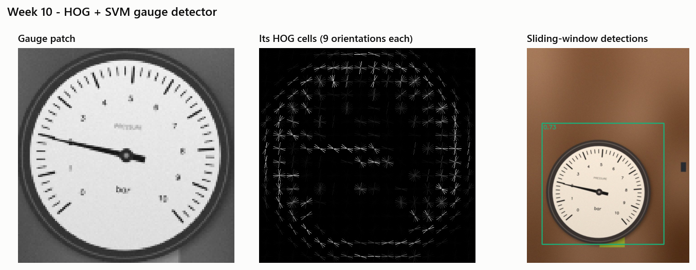
Stage 10: register to a reference photo, and stitch a panel
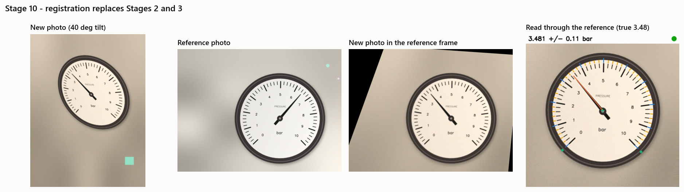
| condition | photos | registered % (>= 15 inliers) | mean RANSAC inliers | answered % via registration | mean error via registration (% FS) | gross % via registration | answered % via Stages 2-3 | mean error via Stages 2-3 (% FS) | gross % via Stages 2-3 | answered % registration with fallback | mean error with fallback (% FS) |
|---|---|---|---|---|---|---|---|---|---|---|---|
| tilt 0 deg, room light | 18 | 100 | 64.44 | 100 | 0.01 | 0 | 100 | 0.01 | 0 | 100 | 0.01 |
| tilt 0 deg, window light | 18 | 100 | 45.56 | 94.44 | 0.2 | 0 | 94.44 | 0.18 | 0 | 94.44 | 0.2 |
| tilt 20 deg, room light | 18 | 100 | 60.56 | 100 | 0.01 | 0 | 100 | 0.01 | 0 | 100 | 0.01 |
| tilt 20 deg, window light | 18 | 100 | 42.39 | 83.33 | 3 | 6.67 | 88.89 | 2.88 | 6.25 | 88.89 | 2.81 |
| tilt 40 deg, room light | 18 | 100 | 34.5 | 100 | 0.02 | 0 | 100 | 0.2 | 0 | 100 | 0.02 |
| tilt 40 deg, window light | 18 | 77.78 | 24.89 | 72.22 | 0.04 | 0 | 94.44 | 0.34 | 0 | 94.44 | 0.03 |
| all | 108 | 96.3 | 45.39 | 91.67 | 0.5 | 1.01 | 96.3 | 0.57 | 0.96 | 96.3 | 0.48 |
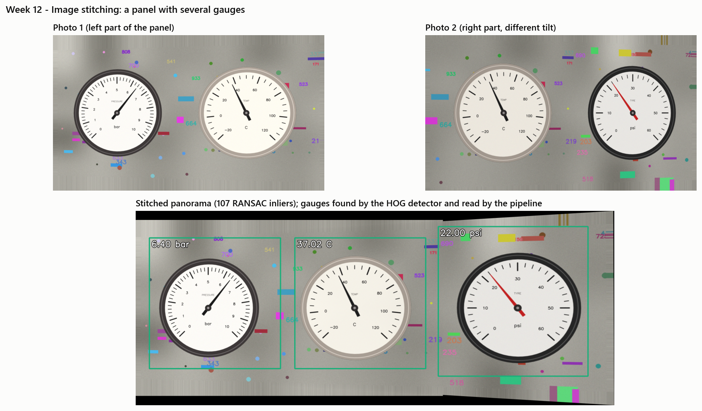
| gauge | true | read | status | error % FS |
|---|---|---|---|---|
| pressure_gauge | 6.4 | 6.4 | reliable | 0.002 |
| thermometer | 37 | 37.02 | reliable | 0.011 |
| tyre_gauge | 22 | 22 | reliable | 0.002 |
Stage 11: compression for upload
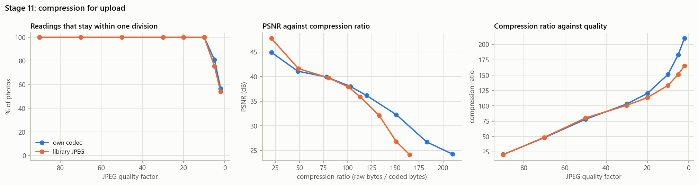
| quality factor | photos | own codec: compression ratio | own codec: PSNR (dB) | own codec: read within 1 division % | own codec: mean error (% FS) | library JPEG: compression ratio | library JPEG: PSNR (dB) | library JPEG: read within 1 division % | library JPEG: mean error (% FS) |
|---|---|---|---|---|---|---|---|---|---|
| 90 | 37 | 20.76 | 44.89 | 100 | 0.01 | 20.62 | 47.73 | 100 | 0.02 |
| 70 | 37 | 48.22 | 41.09 | 100 | 0.02 | 48.79 | 41.62 | 100 | 0.02 |
| 50 | 37 | 78.23 | 39.91 | 100 | 0.01 | 80.28 | 39.73 | 100 | 0.02 |
| 30 | 37 | 103.03 | 38.01 | 100 | 0.02 | 100.99 | 37.91 | 100 | 0.02 |
| 20 | 37 | 120.15 | 36.16 | 100 | 0.02 | 113.39 | 35.89 | 100 | 0.03 |
| 10 | 37 | 151.14 | 32.29 | 100 | 0.03 | 133.25 | 32.1 | 100 | 0.05 |
| 5 | 37 | 183.05 | 26.74 | 81.08 | 10.69 | 151.14 | 26.83 | 75.68 | 5.27 |
| 2 | 37 | 209.9 | 24.29 | 56.76 | 11.04 | 165.07 | 24.19 | 54.05 | 10.89 |
Stage 1 study: noise and blur (week 5)
| degradation | photos | PSNR degraded (dB) | PSNR after Stage 1 (dB) | read within 1 division %, Stage 1 on | read within 1 division %, Stage 1 off | steps applied |
|---|---|---|---|---|---|---|
| clean | 36 | 36.5 | 100 | 100 | sharpen x36, contrast x8 | |
| Gaussian blur 2 px | 36 | 31.3 | 34.2 | 100 | 100 | deblur x36, contrast x9 |
| Gaussian blur 4 px | 36 | 27 | 28.3 | 100 | 77.8 | deblur x36, contrast x10 |
| motion blur 13 px | 36 | 28.4 | 27.9 | 94.4 | 63.9 | deblur x35, contrast x7, sharpen x1 |
| Gaussian noise 20 | 36 | 22.3 | 28.1 | 100 | 100 | denoise x36, contrast x10 |
| salt-and-pepper 6% | 36 | 17.3 | 34.1 | 100 | 83.3 | denoise x36, contrast x9 |
| blur 2 px + noise 12 | 36 | 25.3 | 27.4 | 100 | 97.2 | denoise x36, contrast x10 |
gaussian sigma=3.0, which
takes the photo from 29.5 dB down to 28.2 dB: ringing
raises the score. The truly best kernel in the bank is gaussian sigma=2.0
(35.7 dB). Stage 1 instead estimates the blur from the photo's own edges and reaches
35.8 dB (gaussian sigma=1.98).Every kernel in the bank, scored on that photo (18 rows)
| kernel | variance of Laplacian | gradient L1/L2 | PSNR vs sharp photo (dB) | chosen by |
|---|---|---|---|---|
| none (input) | 70.58 | 0.286 | 29.5 | |
| gaussian sigma=1.0 | 233.14 | 0.461 | 30.4 | |
| gaussian sigma=1.5 | 259.75 | 0.388 | 32.48 | |
| gaussian sigma=2.0 | 551.56 | 0.334 | 35.69 | best PSNR (truth) |
| gaussian sigma=3.0 | 1604.37 | 0.312 | 28.19 | highest Laplacian variance |
| motion len=7 angle=0 | 462.1 | 0.515 | 29.83 | |
| motion len=7 angle=45 | 512.27 | 0.495 | 29.82 | |
| motion len=7 angle=90 | 505.91 | 0.506 | 29.94 | |
| motion len=7 angle=135 | 468.04 | 0.503 | 29.89 | |
| motion len=11 angle=0 | 972 | 0.516 | 24.1 | |
| motion len=11 angle=45 | 1140.97 | 0.51 | 22.04 | |
| motion len=11 angle=90 | 1115.08 | 0.508 | 23.24 | |
| motion len=11 angle=135 | 1039.55 | 0.525 | 22.68 | |
| motion len=15 angle=0 | 1167.73 | 0.502 | 21.36 | |
| motion len=15 angle=45 | 1276.87 | 0.498 | 20.11 | |
| motion len=15 angle=90 | 1232.04 | 0.492 | 20.86 | |
| motion len=15 angle=135 | 1153.05 | 0.509 | 20.86 | |
| edge-based estimate: gaussian sigma=1.98 | 35.75 | used by Stage 1 |
Stage 8 thresholds
| signal | meaning when crossed | worse when | default | tuned on validation |
|---|---|---|---|---|
| needle_spread | needle angle is uncertain | larger | 1 | 1.08 |
| method_gap | line fit and Hough line disagree on the needle | larger | 1.5 | 0.552 |
| rim_support | dial rim only partly found | smaller | 0.55 | 0.408 |
| rim_residual | dial rim does not fit an ellipse well | larger | 1.2 | 1.18 |
| comb_residual | tick marks are not evenly spaced | larger | 0.12 | 0.081 |
| comb_missing | many tick marks are missing | larger | 0.15 | 0.071 |
| dft_gap | tick spacing from the DFT disagrees with the comb | larger | 0.06 | 0.015 |
| tick_snr | tick marks are faint | smaller | 6 | 11.65 |
| glare_overlap | glare covers the needle | larger | 0.25 | 0.588 |
| tick_count | tick count does not match the scale | larger | 0.5 | 0.5 |
| out_of_range | needle is outside the scale | larger | 1 | 1 |
| sentinel | VLM coarse reading disagrees (gross-error sentinel) | larger | 1 | 1 |
The 14 lab weeks
Each lab program is one module of the project. Click a figure to enlarge it.
Week 1: SciPy and matrix arithmetic
dialreader/w01_matrix.py
Rotation, affine and homography matrices, a DLT homography solver, the polar sampling grid.

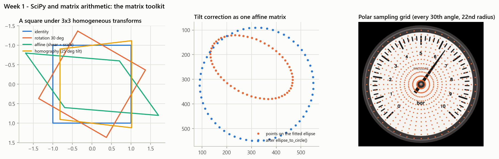
Week 2: Image attributes and negation
dialreader/w02_attributes.py
Dataset loader, image attributes, histograms, and the negative that turns a dark dial face into a light one.

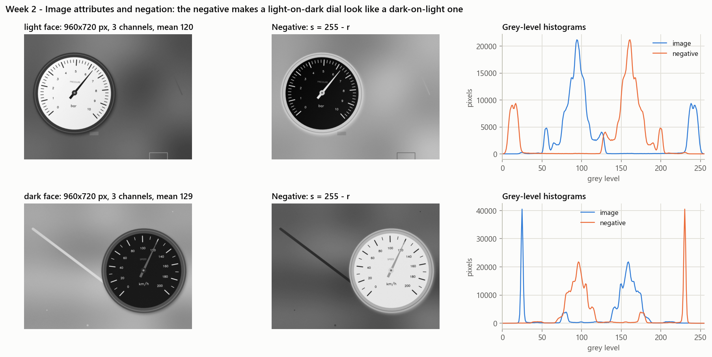
Week 3: 2D and 3D transformations
dialreader/w03_geometry.py
Stage 3: ellipse to circle (affine), a circle-preserving homography, and a four-corner homography.

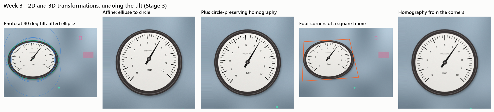
Week 4: Enhancement with filters and histograms
dialreader/w04_enhance.py
Stage 1 contrast: histogram equalisation written out, CLAHE, smoothing and sharpening.

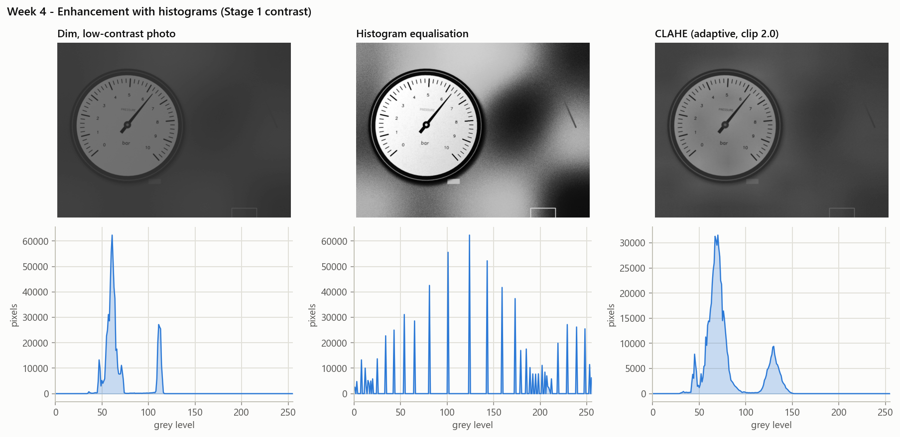
Week 5: Linear and non-linear filters
dialreader/w05_restore.py
Stage 1: Gaussian and median denoising, Wiener deblurring, blur kernel from the cepstrum, glare mask.

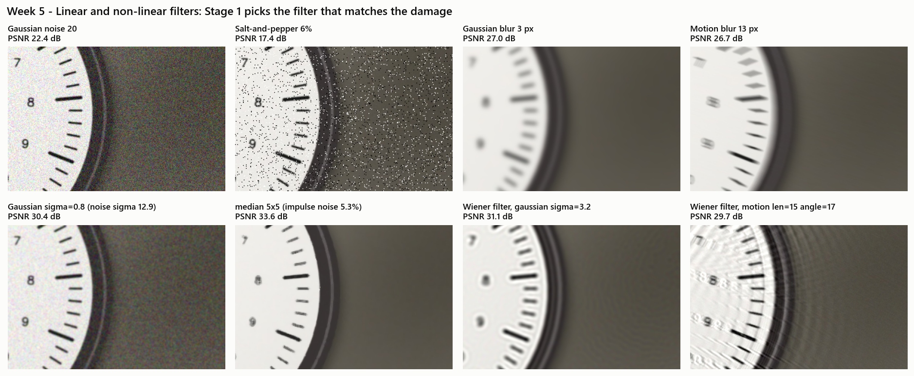
Week 6: Image segmentation
dialreader/w06_segment.py
Otsu thresholding written out and region growing: the needle mask and the glare mask.

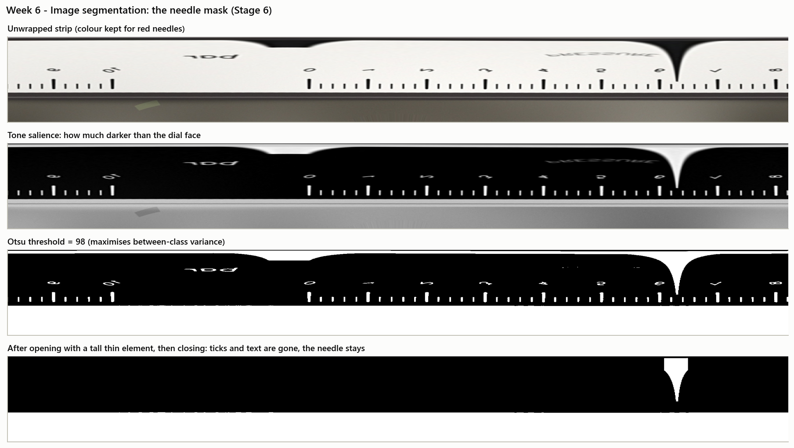
Week 7: Image compression
dialreader/w07_compress.py
Stage 11: 8x8 DCT, quantisation, zigzag, run-length and Huffman coding, against library JPEG.

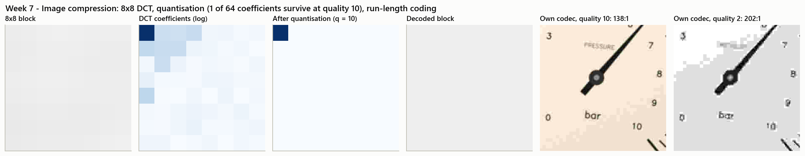
Week 8: Morphological opening and closing
dialreader/w08_morphology.py
Mask cleanup, black-hat tick extraction and the morphological skeleton of the needle.

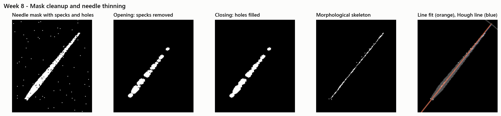
Week 9: Canny edge detection
dialreader/w09_detect.py
Canny step by step, Hough circle, RANSAC ellipse, tick DFT and comb, Hough line: classical v1.

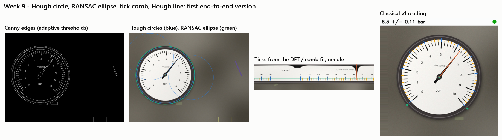
Week 10: HOG
dialreader/w10_hog.py
Stage 9: HOG written out, a linear SVM and a sliding window find the gauge in a cluttered scene.
Week 11: SIFT interest points
dialreader/w11_sift.py
Stage 10: SIFT matches with the ratio test, between a new photo and a stored reference.

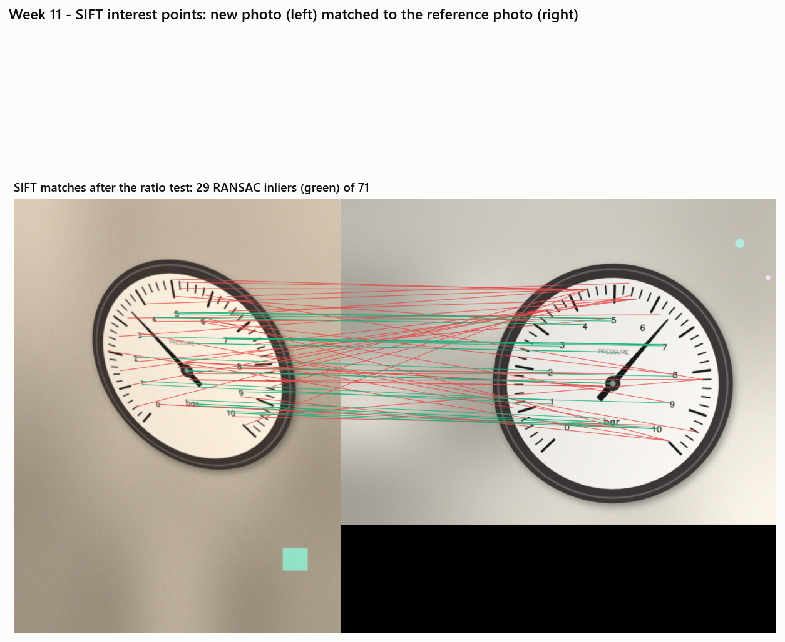
Week 12: Image stitching panorama
dialreader/w12_stitch.py
RANSAC homography and feathered blending join two photos of a three-gauge panel.

Week 13: LBP
dialreader/w13_lbp.py
Stage 9: uniform local binary patterns over a grid of cells classify the gauge type.

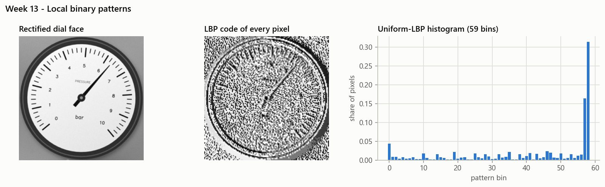
Week 14: Image classification with Bag of Words
dialreader/w14_bow.py
Stage 9: k-means visual words on SIFT descriptors, word histograms and an SVM.

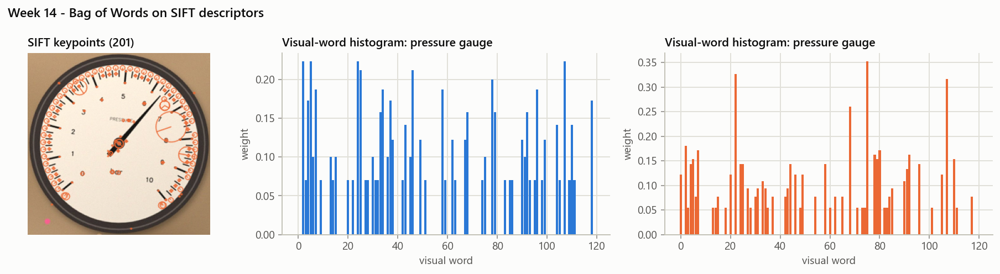
Negative results, limits and changes from the plan
What did not work
- Hook 2 (sentinel) added false alarms and caught nothing Stage 8 had not already caught.
- Hook 3 (repair loop) did not measurably beat a fixed-order rule: 3 against 3 photos fixed on the test split and 4 against 3 on the stress set, at about two VLM calls per flagged photo.
- On real MeasureBench photos the classical pipeline was right on few and abstained on most.
- The plan's rule for choosing a deblurring kernel (highest variance of the Laplacian) picks over-sharpened, ringing results.
Limits of the evidence
- No hand-collected photos yet. All in-scope numbers are on rendered dials. The folder and CSV format for real photos are ready.
- The MeasureBench sample is small (21 photos, picked and labelled by one reader), so its percentages move in steps of about 5 points.
- The test split was not touched only once. Two fixes were made after first seeing test-side results: treating a large clipped region as over-exposure rather than glare (found in E2, checked on the validation split, then E2 rerun), and making the LBP codes tolerant of noise (found in Stage 9). All tables here are from the final code.
- One VLM, one run. Hook results are for one model at low reasoning effort. A different model could change the hook 2 and hook 3 verdicts.
- Scope. Single-needle circular dials with one scale. Full-circle scales, dual scales, semi-circular and multi-needle instruments are out of scope; hook 1 rejects the scale types it reports as unsupported.
- Not for safety-critical decisions. Always read the error bar and the reliability flag.
Changes from the plan, and why
- Blur kernel: estimated from the image instead of chosen by sharpness score. Gaussian blur from the gradient loss at strong edges under re-blurring; motion blur from the cepstrum, which is the plan's "pattern of zeros in the DFT" turned into a measurement.
- Tilt: the affine ellipse-to-circle map leaves the true centre displaced under perspective. The Stage 4 centre search applies each candidate as a circle-preserving homography, which removes that residual and is what makes 40 degree tilt readable.
- Canny thresholds are taken from each photo's gradient distribution, after fixed thresholds lost low-contrast rims.
- Order: the needle is located before the comb fit, so the needle is not counted as a tick.
- Ellipse RANSAC draws each sample from one edge contour, because a bezel gives several concentric rings.
- Error metric is capped at 100% of full scale, so one wildly extrapolated reading cannot dominate a mean.
- Stress set added, because the clean test split has almost no gross errors for the hooks to act on.
How to run
streamlit run app.py opens the demo: pick or upload a photo, see every stage, and get the reading with its
error bar and flag. python -m pytest tests -q runs the unit tests. python experiments/run_all.py
regenerates every table and figure here; add --genai to rerun the hook experiments (needs a key in
.env). See README.md for the layout.